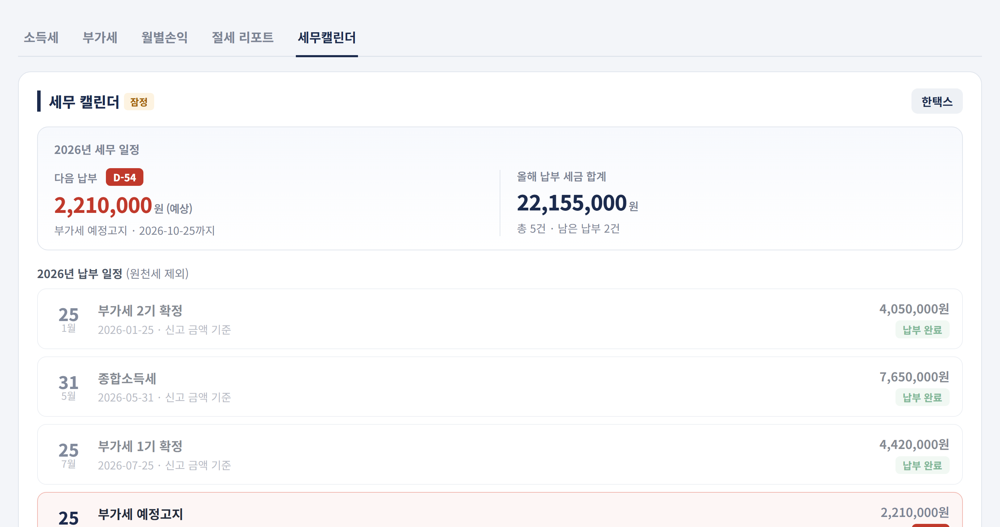
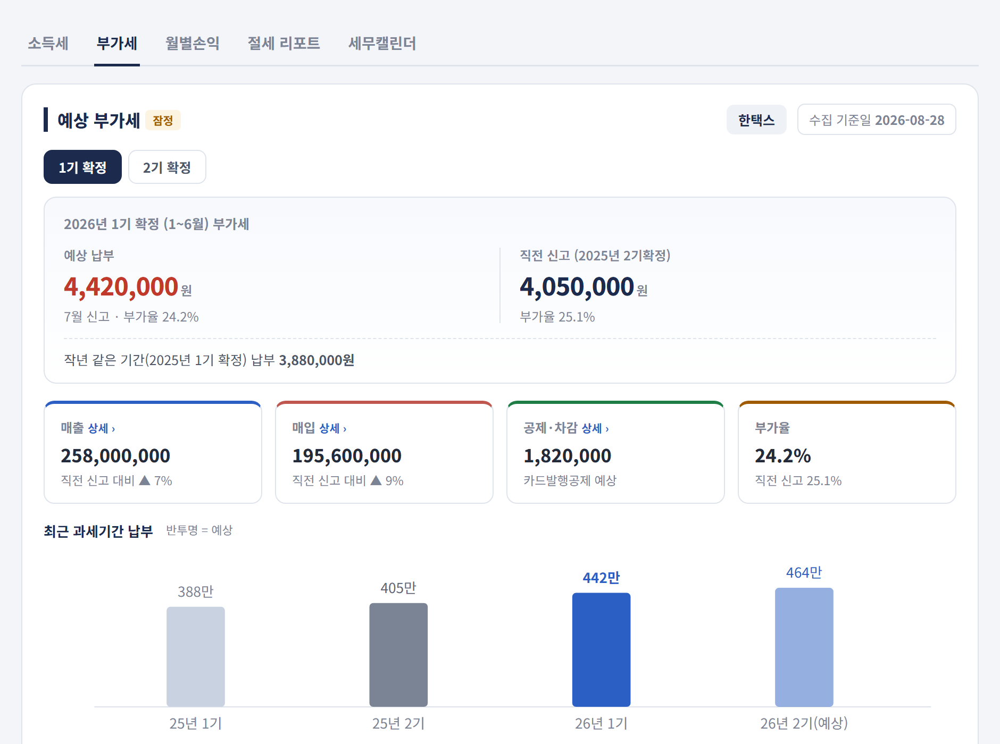
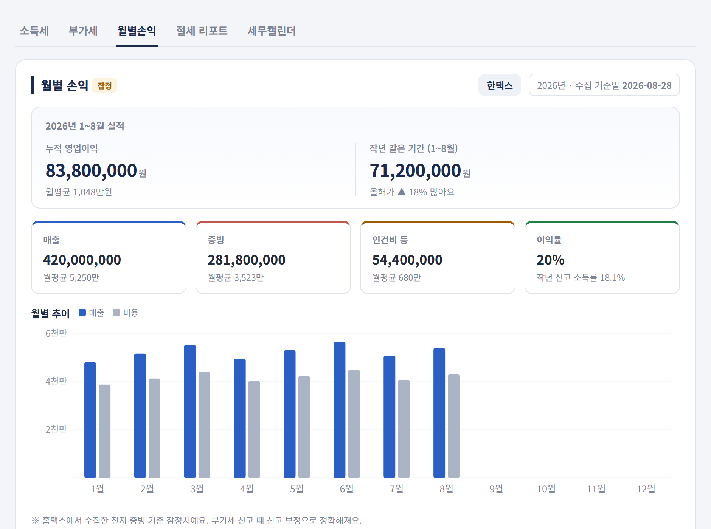
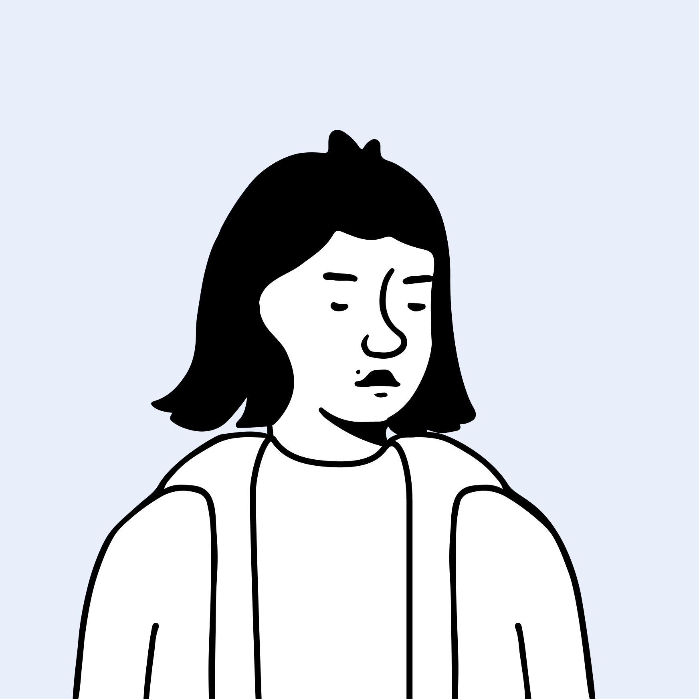
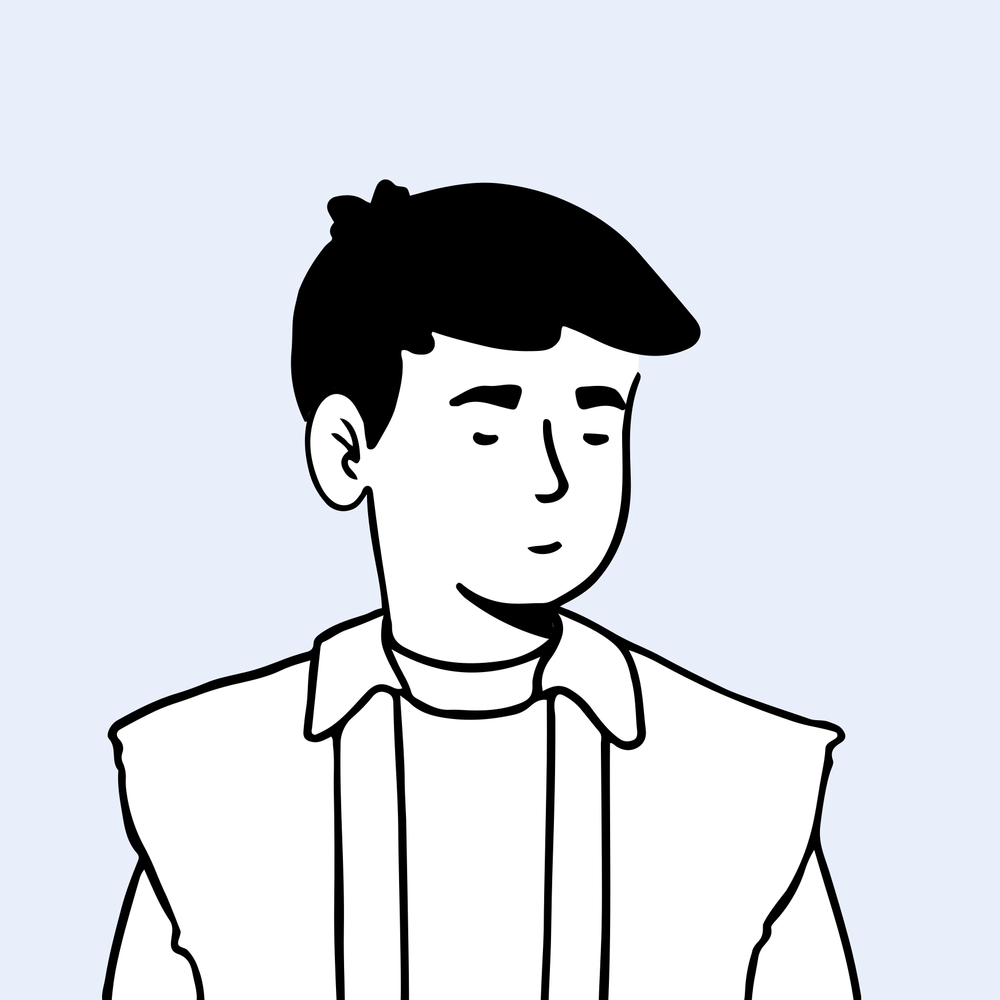
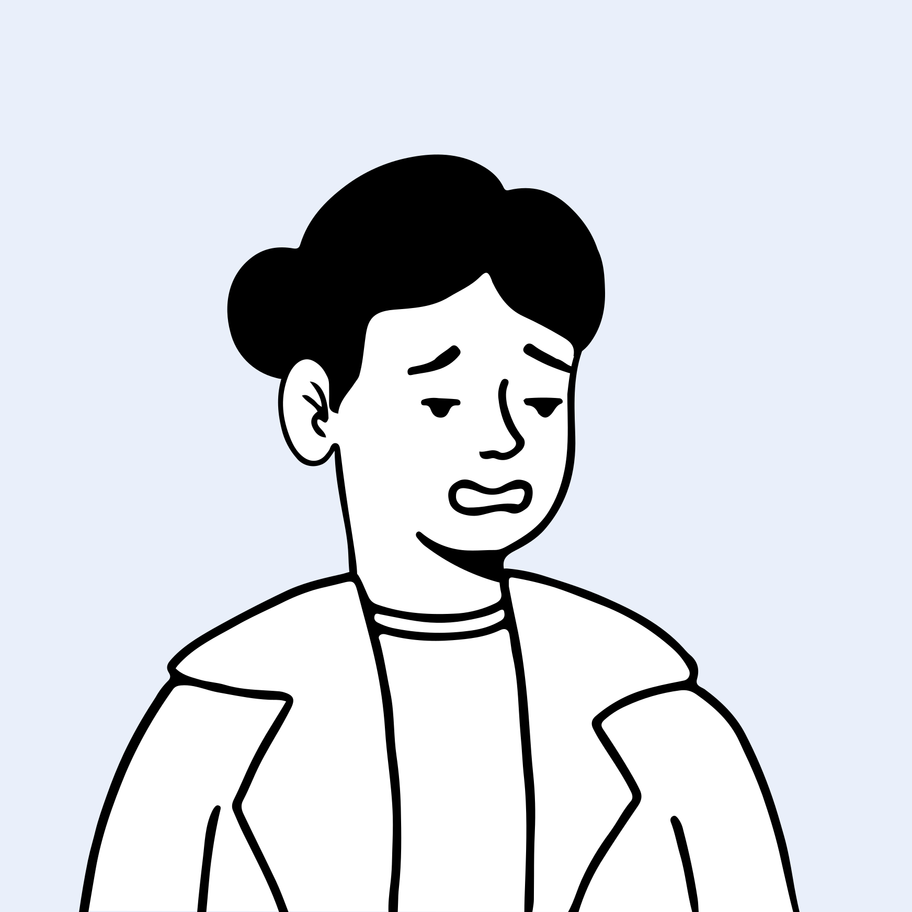
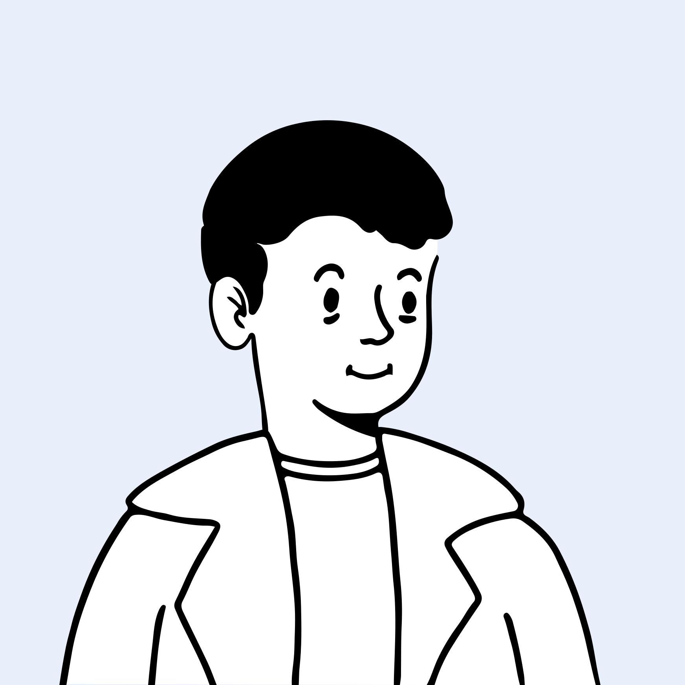

회사에는 저마다의 이야기가 있고 그 이야기는 숫자 뒤에 가려져 있습니다.
한택스는 그 이야기를 먼저 읽습니다.
사장님의 스토리를 기억하는 세무사




몰라서 손해 보는 일이
없도록, 한택스가 있습니다
그동안의 세무는 신고하기에 급급했습니다. 미리 준비할 시간도, 의사결정에 도움이 되는 정보도 드리지 못했습니다. 한택스는 그 방식에서 벗어나기로 했습니다.
모으고, 찾아내는 시스템
사람이 매번 확인하기 어려운 항목을, 직접 개발한 프로그램이 반복해서 점검해 찾아냅니다. 현장에서 필요한 기능은 바로 만들어 반영합니다.
판단하고, 전하는 사람
그 시간을 판단과 소통에 씁니다. 무엇이 문제이고 어떤 선택지가 있는지, 담당자가 회사 사정에 맞게 설명드립니다.
찾아내는 건 프로그램이 하고, 전하는 건 사람이 합니다.
지나간 기록이 아니라,
앞으로 낼 세금을
장부 정리는 과거를 향하지만, 리포트는 앞을 봅니다. 월별 손익과 예상 소득세·부가세를 한 장으로 정리해 보내드립니다. 확인이 필요한 항목이 있으면 담당 직원이 연락드립니다.
"그 예상이 정확한가요?"
소득세는 현재 증빙과 작년 소득률 두 가지 기준으로, 부가세는 기수별 매출·매입으로, 월별 손익은 홈택스에 모인 자료로 잠정 집계합니다. 확정 금액이 아니라 준비할 범위를 아는 것이 목적입니다.



실제 리포트 화면입니다 (예시 데이터) · 누르면 다음 화면이 보입니다
물어보시기 전에,
먼저 챙겨드립니다
절세 방안, 세무조사 위험, 증빙 실수 — 회사 기록에서 찾아낸 항목을 미리 알려드립니다.
"우리 회사에 해당되는 게 있긴 한가요?"
50여 가지를 모두 보내지 않습니다. 사장님 회사 자료에 해당되는 항목만 골라 안내드립니다.
통합고용공제 추징 위험직원 변동에 따른 추징금액을 미리 산정합니다
퇴직금 추정금액직원과 대표님 퇴직금으로 얼마를 지급해야 하는지 알려드립니다
가지급금 인정이자 입금대표님 상여로 처리되지 않게 입금 시기를 챙겨드립니다
노란우산공제 가입예상 소득에 맞춰 추가 납입 가능액을 안내드립니다
창업감면 기간 경과감면 기간 5년 경과 시점을 미리 알려드립니다
이 외에도 50여 가지 체크리스트를 사전에 점검합니다.
우리 회사에도 해당되는 게 있는지 궁금하신가요?
카카오톡으로 물어보기회사의 이야기를,
빠짐없이 모읍니다
매일 쓰는 상담일지, 회사마다 등록되는 할 일, 신고서마다 남는 결재 기록. 매출과 비용부터 주고받은 이야기까지 프로그램에 차곡차곡 쌓입니다. 프로그램이 생기기 전부터 10년 넘게 쌓아 온 상담일지만 수만 건입니다.
"담당자가 바뀌거나 자리를 비우면 문제없나요?"
기록이 사람의 머릿속이 아니라 프로그램에 남습니다. 담당자가 바뀌어도, 부재중이어도 회사의 이야기는 그대로 이어집니다.


실제 프로그램 화면입니다 (예시 데이터) · 누르면 다음 화면이 보입니다
사장님의 스토리를
지키는 사람들
리포트도 알림도, 결국 사람이 완성합니다.

이O윤 과장근속 10년 · 경력 10년전산세무 1급 이수
김O현 대리근속 8년 · 경력 8년전산세무 1급 · TAT 1급 · 재경관리사
박O빈 대리근속 6년 · 경력 8년전산세무 1급·2급 취득 김O철 주임근속 4년 · 경력 4년전산세무 1급 이수 · 2급 취득
김O철 주임근속 4년 · 경력 4년전산세무 1급 이수 · 2급 취득
우O주 주임근속 3년 · 경력 3년전산세무 1급·2급 취득 김O지 주임근속 1년 차 · 경력 3년전산세무 2급 취득
김O지 주임근속 1년 차 · 경력 3년전산세무 2급 취득"숫자를 정리하는 일은 프로그램에게 맡기고,
한택스 대표 한진식 세무사
저희는 사장님과 이야기하는 데 시간을 쓰겠습니다."
세무사 2인
- 간이사업자부터 상장 준비 법인까지 다양한 업종 경험
- 각종 해명자료 제출과 세무조사 대응 경험
- 전문분야에 맞춰 세무사와 직접 소통 가능
담당 직원
- 사장님과 나눈 이야기를 매일 상담일지로 남깁니다
- 모든 직원 전산세무 1급 또는 2급 보유
- 세무회계경진대회 2회 연속 입상
- 신입 직원은 일정 교육을 마친 뒤 업체를 배정합니다